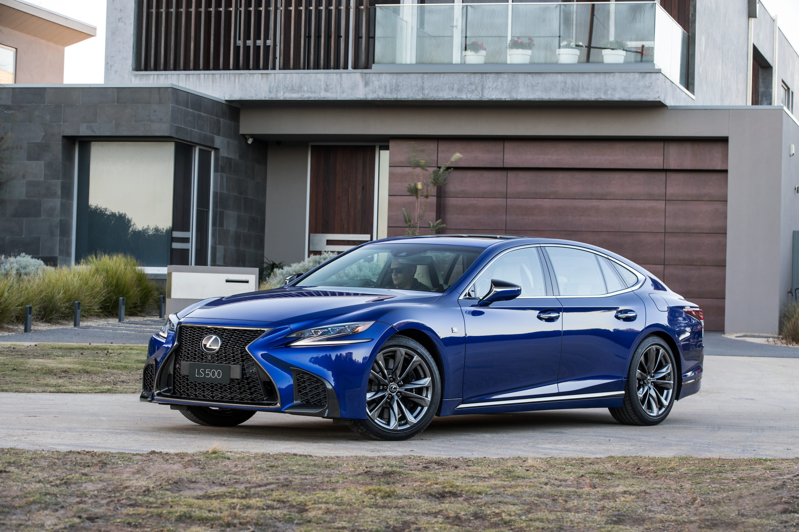
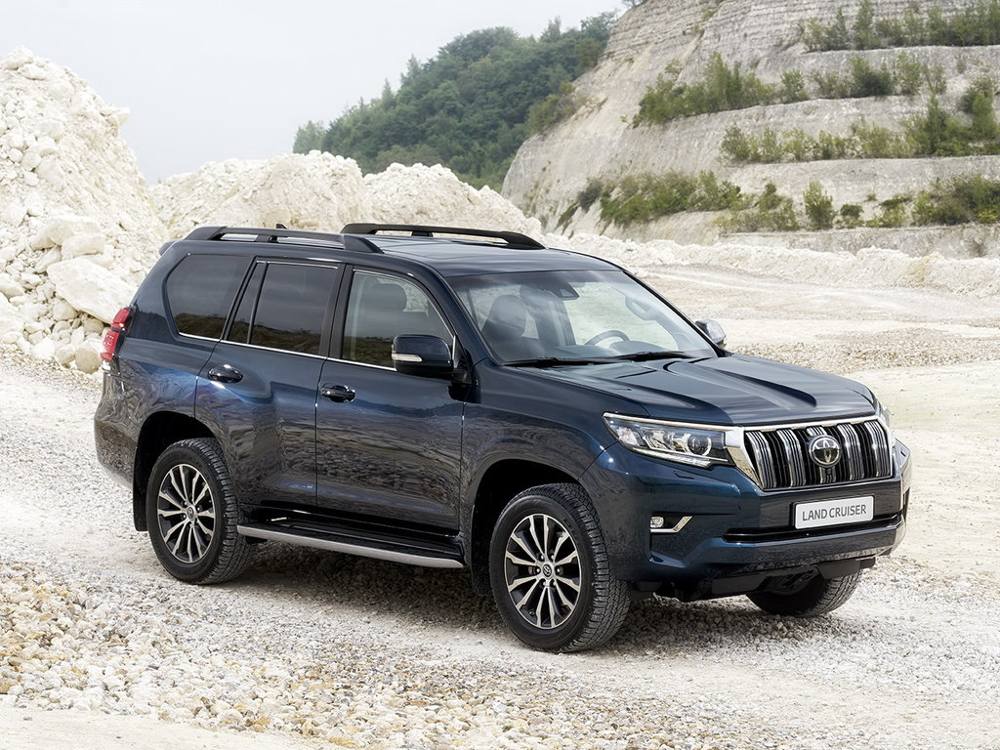

G20 — самая крупная «трешка» в истории: ее длина, ширина, высота составляют 4709, 1827 и 1442 мм соответственно.
Колесная база достигла 2851 мм. Относительно уходящей модели генерации F30 новинка на 85 мм длиннее, на 16 мм шире,
на 1 мм выше, а ее колесная база больше на 41 мм. Кроме того, на 43 мм увеличилась передняя колея, на 21 мм — задняя.
Шутка ли: по длине новая 3 series сопоставима с 5 series E34 образца 1987 года, а по ширине и колесной базе значительно
превосходит ее. Несмотря на увеличение габаритов, «трешка» G20 легче своей предшественницы — оптимизация конструкции
и применение облегченных материалов позволили снизить снаряженную массу по всем комплектациям в среднем на 55 кг.
В новом поколении BMW 3 series сохранены характерные для модели пропорции, отличительными чертами которых являются короткий
передний свес и смещенная назад кабина. Но по формообразованию кузов стал совершенно другим — пластика поверхностей
более вычурная и сложная. Интересная деталь — на G20 дизайнеры BMW по-новому обыграли фирменную конфигурацию окон,
известную как «изгиб Хофмайстера». В законцовке задних окон теперь появился небольшой угол, а закругляющий кант отныне
крепится к задней стойке, а не к двери. Кузов тщательно проработан с точки зрения обтекаемости — коэффициент
аэродинамического сопротивления составляет всего 0,23 (это очень мало).
Салон выполнен в новой итерации фирменного стиля BMW: оформление всем знакомой архитектуры с чуть повернутой к водителю центральной
консолью теперь тяготеет к стилю «техно». В базовой комплектации BMW 3 series G20 оснащается 5,7-дюймовым дисплеем цифровой
комбинации приборов и 8,8-дюймовым сенсорным экраном мультимедийной системы. Более дорогие версии будут комплектоваться 12,3-дюймовой
комбинацией и 10,25-дюймовым экраном мультимедиа. Информация о том, что версии с «автоматом» не будут иметь традиционного селектора,
не подтвердилась: на центральной консоли 3 series с АКП видно привычную «переключалку» режимов трансмиссии.
На старте продаж для новой «трешки» заявлены пять двигателей. 320i и 330i оснащаются четырехцилиндровыми бензиновыми двигателями и развивают
184 л.с. и 258 л.с. соответственно. Дизельные четырехцилиндровые силовые агрегаты выдают 150 л.с. в 318d и 190 л.с. в 320d. 330d
оснащается шестицилиндровым рядным дизельным двигателем мощностью 265 л.с. Помимо заднеприводной версии уже на начальном этапе
будет предложена и версия с полным приводом — 320d xDrive. В России первое время будут доступны три варианта новинки — 330i, 320d
и 320d xDrive. Для нас все версии будут по умолчанию комплектоваться пакетом M Sport, который для других рынков предложат как опцию.
M Sport включает бамперы в агрессивном стиле, спортивные подвеску и тормоза, трехспицевое рулевое колесо с кожаной оплеткой и
светодиодные «противотуманки». Для 330i в виде опции предложат продвинутый дифференциал M Sport. Все BMW 3 series нового поколения
оснащаются амортизаторами прогрессивного типа. Их жесткость постоянно подстраивается под ход пружин, что снижает раскачку кузова
при проезде неровностей или крутых поворотов.
Мощность, л.с. при об/мин:
190/4000
Разгон 0-100 км/ч, с:
6,9
Расход топлива в смешанном цикле, л/100 км:
5,1
Выбросы CO2, г/км (в смешанном цикле):
133
Еще из важного: утверждается, что салон автомобиля стал просторнее по сравнению с моделью-предшественницей. Стало больше места в районе ног
и плеч передних седоков. Объем багажника вырос на 20 литров и теперь достигает 480 литров. Спинка заднего сиденья «разрезана» на три
части в пропорции 40:20:40. Опционально доступна багажная дверь с электроприводом и сцепное устройство для прицепа, которое выдвигается
и складывается автоматически.
Lexus LS пятого поколения был презентован в январе 2017 года на автошоу в Детройте. Новый флагманский седан стал длиннее и ниже предшественника, а также «похудел» на 90 кг. Экстерьер автомобиля выполнен в футуристичном стиле, в интерьере появилось инновационное оборудование, а в линейке моторов единственный её представитель был заменён новым V6.

Для LS500 доступно целых 8 комплектаций. Первые два исполнения Comfort+ и Executive имеют примерно одинаковое оснащение, и отличаются между собой только размерами колёсных дисков. В перечень базового оборудования вошли подлокотники, кожаная обивка сидений, камеры панорамного обзора и электропривод задних сидений. Топовой модификацией седана считается версия F-Sport, которая включает в себя модернизированные бамперы, дополнительный спойлер, фирменные логотипы на передних крыльях, спортивные кресла и многофункциональное рулевое колесо.
Уже привычный атмосферник V8 в LS500 заменён новым 3.5-литровым агрегатом V6 с турбонаддувом. Мотор отличается высокой экономичностью и способен продуцировать 421 лошадиную силу. Он работает в тандеме с высокотехнологичной трансмиссией 10АКПП. Благодаря новому двигателю, LS500 до первой сотни разгоняется за 4.9 с..
Экстерьер LS500 выполнен с учётом последних дизайнерских тенденций. В его основе лежит стилистическое направление, которое применяется ко всем новым моделям Lexus. Важную роль играют стремительные линии кузова, подчёркивающие спортивность автомобиля. Передняя часть оснащена большой фальшрадиаторной решёткой и «агрессивными» фарами. Кормовая часть LS500 получила мощный бампер, стильные выштамповки и высокотехнологичную оптику.
Для отделки салона производитель использовал исключительно высококачественные материалы. Комфорт водителя и пассажиров обеспечивает не только продуманная шумоизоляция, но и специальная система подавления шума. В верхней части приборной панели установлен новый мультимедийный комплекс с 12.3-дюймовым экраном, который уже хорошо зарекомендовал себя у модели RX последнего поколения.
Компания Toyota представила обновленную версию внедорожника Land Cruiser Prado. Снаружи рестайлинговый автомобиль можно узнать по изменившейся передней части — теперь у Prado другой капот, передние крылья, бампер, решетка радиатора и светодиодные фары. Задние фонари и бампер тоже обновили. Производитель утверждает, что крайние точки передних крыльев переместили выше — так водителю будет удобнее ощущать габариты машины. Кроме того, решетку и фары тоже перенесли вверх из соображений защиты этих элементов на бездорожье. Официальные показатели — угол въезда в 31 градус и угол съезда в 25 градусов.

Для LS500 доступно целых 8 комплектаций. Первые два исполнения Comfort+ и Executive имеют примерно одинаковое оснащение, и отличаются между собой только размерами колёсных дисков. В перечень базового оборудования вошли подлокотники, кожаная обивка сидений, камеры панорамного обзора и электропривод задних сидений. Топовой модификацией седана считается версия F-Sport, которая включает в себя модернизированные бамперы, дополнительный спойлер, фирменные логотипы на передних крыльях, спортивные кресла и многофункциональное рулевое колесо.
Салон внедорожника тоже преобразился — новая центральная консоль с перераспределенными органами управления (верхнюю точку панели сместили вниз для лучшего обзора), другие рулевое колесо и селектор коробки передач. На приборной панели расположен 4,2-дюймовый дисплей, а на основной консоли — 8-дюймовый экран мультимедийной системы.
Силовые установки — 2,7-литровый бензиновый мотор 2TR-FE (163 л.с.) и 2,8-литровый 177-сильный дизель 1GD-FTV. «Младший» бензиновый агрегат можно заказать с 5-ступенчатой «механикой» или 6-диапазонным «автоматом», дизель — с МКП или АКП с шестью передачами. V-образную «шестерку» объемом 4,0 литра, доступную на некоторых европейских рынках, в том числе России, дефорсировали с прежних 282 до приятных с точки зрения налогообложения 249 л.с. Такой мотор комплектуют только 6-ступенчатым «автоматом».
Еще одно нововведение — появление комплекса безопасности Toyota Safety Sense, который опирается на работу камеры и радара. У системы есть функции предотвращения ДТП с режимом обнаружения пешеходов, адаптивный круиз-контроль, автоматическое переключение между дальним и ближним светом, слежение за соблюдением разметки и датчик «слепых» зон. Также есть помощник при выезде задним ходом и обновленная система слежения за давлением в шинах.
Каждые 6 лет компания Land Rover представляет публике новый автомобиль. На автосалоне в Женеве показали абсолютно новый внедорожник Range Rover Velar 2022, который расширит линейку производителя.
Внедорожник выглядит очень современно и агрессивно. Заметна большая схожесть с другими моделями компании, но видны нотки современного стиля. Такой капот многие видели, поэтому обсуждать его нет смысла. Большая радиаторная решетка соединяется с новыми узкими светодиодными фонарями. Больше всего внимания привлекают именно новые фары. Новый массивный передний бампер обладает двумя огромными воздухозаборниками с перекладинами, на которых установлены противотуманные фары.
Для LS500 доступно целых 8 комплектаций. Первые два исполнения Comfort+ и Executive имеют примерно одинаковое оснащение, и отличаются между собой только размерами колёсных дисков. В перечень базового оборудования вошли подлокотники, кожаная обивка сидений, камеры панорамного обзора и электропривод задних сидений. Топовой модификацией седана считается версия F-Sport, которая включает в себя модернизированные бамперы, дополнительный спойлер, фирменные логотипы на передних крыльях, спортивные кресла и многофункциональное рулевое колесо.
Все моторы работают в паре с 8-ступенчатой автоматической коробкой передач ZF, она имеет систему Terrain Response. За дополнительную сумму можно установить эту систему второго поколения с функцией автоматического переключения. Дорогие модели будут оборудованы блокировкой межколесного дифференциала.
Здесь полный привод, машина стоит на алюминиевой подвеске, имеющей спереди 2 рычага, а сзади многорычажка. Но, некоторые версии будут оснащены пневмоподвеской, если этого захочет покупатель. Алюминия здесь используется много – приблизительно 81%.
Помимо этого, есть еще различные полезные опции типа: мультимедиа для задних пассажиров, панорама, 22 диски, круговой обзор. Максимальная стоимость может быть около 8-ми миллионов рублей.
Итог: новый британский внедорожник станет еще одним хорошо продаваемым автомобилем, Эвок был по большей части женской машиной, этот будут приобретать в основном мужчины. Дизайн хороший, технические характеристики и салон тоже, модель удачная. Лично нам нравится эта машина, мы уверены в ее успехе на Российском рынке.
Также каждый может разнообразить оснащение выбранной комплектации с помощью дополнительных опций. Самая дорогая комплектация называется R-Dynamic HSE, стоит она 5 567 000 рублей
 В новом поколении BMW 3 series сохранены характерные для модели пропорции, отличительными чертами которых являются короткий
передний свес и смещенная назад кабина. Но по формообразованию кузов стал совершенно другим — пластика поверхностей
более вычурная и сложная. Интересная деталь — на G20 дизайнеры BMW по-новому обыграли фирменную конфигурацию окон,
известную как «изгиб Хофмайстера». В законцовке задних окон теперь появился небольшой угол, а закругляющий кант отныне
крепится к задней стойке, а не к двери. Кузов тщательно проработан с точки зрения обтекаемости — коэффициент
аэродинамического сопротивления составляет всего 0,23 (это очень мало).
В новом поколении BMW 3 series сохранены характерные для модели пропорции, отличительными чертами которых являются короткий
передний свес и смещенная назад кабина. Но по формообразованию кузов стал совершенно другим — пластика поверхностей
более вычурная и сложная. Интересная деталь — на G20 дизайнеры BMW по-новому обыграли фирменную конфигурацию окон,
известную как «изгиб Хофмайстера». В законцовке задних окон теперь появился небольшой угол, а закругляющий кант отныне
крепится к задней стойке, а не к двери. Кузов тщательно проработан с точки зрения обтекаемости — коэффициент
аэродинамического сопротивления составляет всего 0,23 (это очень мало).
 Для LS500 доступно целых 8 комплектаций. Первые два исполнения Comfort+ и Executive имеют примерно одинаковое оснащение, и отличаются между собой только размерами колёсных дисков. В перечень базового оборудования вошли подлокотники, кожаная обивка сидений, камеры панорамного обзора и электропривод задних сидений. Топовой модификацией седана считается версия F-Sport, которая включает в себя модернизированные бамперы, дополнительный спойлер, фирменные логотипы на передних крыльях, спортивные кресла и многофункциональное рулевое колесо.
Для LS500 доступно целых 8 комплектаций. Первые два исполнения Comfort+ и Executive имеют примерно одинаковое оснащение, и отличаются между собой только размерами колёсных дисков. В перечень базового оборудования вошли подлокотники, кожаная обивка сидений, камеры панорамного обзора и электропривод задних сидений. Топовой модификацией седана считается версия F-Sport, которая включает в себя модернизированные бамперы, дополнительный спойлер, фирменные логотипы на передних крыльях, спортивные кресла и многофункциональное рулевое колесо.